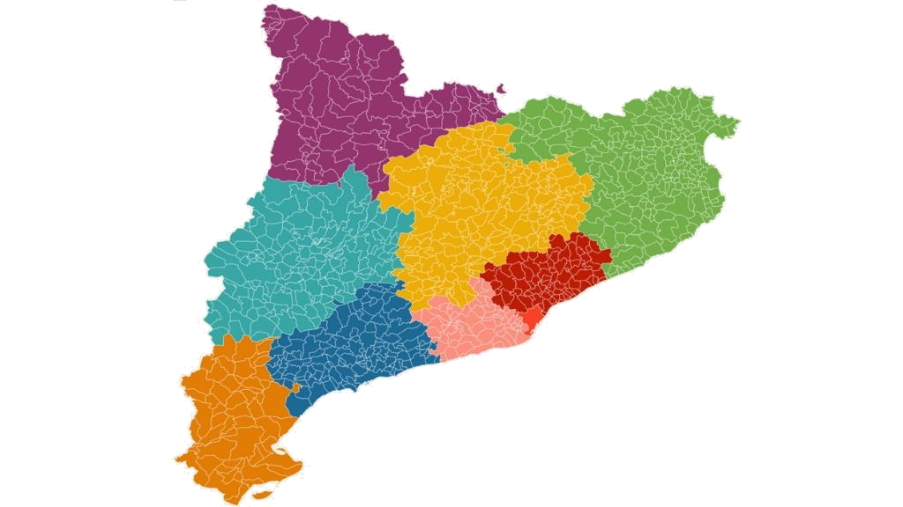

SDL-PAND: PANDEMIC SIMULATION TO TEST THE EFFECTIVENESS OF CONTAINMENT STRATEGIES THROUGH CELLULAR AUTOMATA AND INTELLIGENT AGENTS USING FORMAL LANGUAGES

|  |
SDL-PAND: PANDEMIC SIMULATION TO TEST THE EFFECTIVENESS OF CONTAINMENT STRATEGIES THROUGH CELLULAR AUTOMATA AND INTELLIGENT AGENTS USING FORMAL LANGUAGES
|